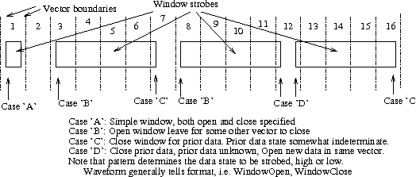
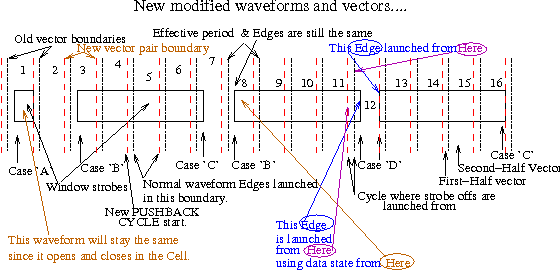

Overall instructions for generating waveforms and patterns
Disclaimers:
Note that all testing has been done on a Linux box with at least
1Gbyte of ram. No testing has yet been done on Solaris boxes.
Also, the best efforts have been made to translate patterns and
waveforms correctly. However, it is the user's responsiblity to
validate that the translation is correct.
Please see the LSLv1.2.txt file in this directory.
Contents |
Build the executables and setup links.
Quick description.
Basic Syntax and usage
Environment variables for DEBUG
General translation procedure
"HOW TO" SECTION
Why do I need to use START/STOP markers and BUILD_INHERIT_MENU?
Using BUILD_INHERIT_MENU
Pattern sequence example showing use of COMMON_WFT
Futher DESUB intstructions
Pattern translation problems????
Some quick comments on translation_status.txt
How to add waveforms in a file like sync.p to the conversion set.
How to deal with Waveforms using chanSecond...
<Need acspec based on START/STOP???? removed>
Troubleshooting START/STOP setups and resolve problems.
How to deal with waveforms which start a window strobe in one cycle
and close it in another.
Issues still to be resolved
Note these instructions are specific for generating patterns and waveforms. The rest of your program (acdata.evo, levels.evo, etc) should be generated using a separate procedure. You probably won't be able to load up your program into enVision without completing the general enVision objects via that procedure. That procedure is NOT documented here.
Build the executables and setup links (assuming this has not been done for you already).
================================
Script Stuff:
cd /YOUR_SCRIPT_LOCATION/VER8/
make clean
make
=================================
Setup Stuff:
cd /YOUR_PROG_DIR/p_files/
ln -s /YOUR_SCRIPT_LOCATION/VER8/GCT_GEN_MOD8
ln -s /YOUR_SCRIPT_LOCATION/VER8/BUILD_INHERIT_MENU
ln -s /YOUR_SCRIPT_LOCATION/PYTHON/ENUMS.py
ln -s /YOUR_SCRIPT_LOCATION/PYTHON/POL2FUS_APS.py
cd /YOUR_PROG_DIR/Vectors/
ln -s /YOUR_SCRIPT_LOCATION/VER8/DESUB
ln -s /YOUR_SCRIPT_LOCATION/VER8/PRE_PROC_NEW
# the following can be used to force CPM:
ln -s /YOUR_SCRIPT_LOCATION/VER8/PRE_PROC_NEW PRE_PROC_CPM
ln -s /YOUR_SCRIPT_LOCATION/VER8/VCP_NEW
ln -s /YOUR_SCRIPT_LOCATION/VER8/VCS_AUTOGEN8
=================================
------------------
GCT_GEN_MOD8:
Creates the mod8 file used to map characters and waveform references in patterns.
Creates waveforms.
Creates waveform selection files.
Figures out scan pins
Eventually, it will be able to extract timing parameters from actable_mod.p and
acdata_mod.p
BUILD_INHERIT_MENU:
This uses the waveform file and menu driven selections to create a specific set of
WaveformTables (and potentially a PatternSequence, with no threads) for the conditions
requested.
Also, if both actable_markers.p and acdata_markers.p have been processed it will create
a acspec2.evo
If you have NO device or category specific conditions in your actable files you will not
need to use this command.
ENUMS.py:
A python script to extract enums.evo from actable.p and Global.h
POL2FUS_APS.py:
A python script to convert adapterboard objects to the appropriate fusion mapping.
DESUB:
A short routine to routine to patch subroutines into patterns. This works only for external
subroutines and not subroutines defined in the same pattern file where it is used.
Note: You can also use thread blocking to tie in the subroutines instead of using
DESUB (see futher details below).
PRE_PROC_NEW/PRE_PROC_CPM:
The front end to the pattern converters. This routine does field to binary vectors, works
out microinstructions, and does various things to precondition the vectors. It then selects
which of the converters (VCP or VCS) to run.
VCP_NEW:
The parallel pattern converter, usually called automatically by PRE_PROC_NEW.
VCS_AUTOGEN8:
The scan converter, usually called automatically by PRE_PROC_NEW.
Also available is VER8_Rx.x/VER8_DOC/PATGRP_WFT.evo This provides the PatternGroup waveformtable for the alias assignments. Normally, you'll copy the contents of this file into your cycletbl.evo file.
===================================
-----------------------
GCT_GEN_MOD8 -fpda cycletbl_mod.p pinlist.txt device_mod.p actable_mod.p
Parameter meanings:
-f cycletbl.p file follows
-p pinlist.txt file follows
-d device_mod.p file follows
-a actable_mod.p file follows
-n Do not generate modifications to handle multicycle windows. DO NOT USE this
option unless you really know what you are doing. By NOT using this option additional
features will be added to the translation to handle multicycle windows if they exist. These
features include evX2 pattern mode so the close cycles can be separated, PUSH_CYC
spec parameter is subtracted from the "real" period and the "close window"
waveformtables use this parameter. If you include this option any Cells which probably
needed this feature may not resolve properly. Warnings will be added to the waveform
files and the patterns if this parameter is used.
Note that EX/FX1 may be the only tester which will properly support multicycle window strobes.
-m This will remove muxed pins from the waveforms and the patterns. On Polaris
a major use of mux mode is to get four edges instead of the normal max of three. If
you initially translate and find this is the case you can re-run with this option and the
waveforms will not be generated for the mux pins, patterns will use the AM_NOMUX
character in aliasmap.h for muxpins (currently space).
Note there was a prior feature intended to extract acspec parameters from actable.p this feature has been turned off for the moment....
GCT_GEN_MOD8 -fpda empty_file.p pinlist.txt device_mod.p acdata_mod.p
(this is to parse specifically for acdata parameters for BUILD_INHERIT_MENU to
create a spec).
python ENUMS.py actable.p Global.h
(don't forget the python command in front)
python POL2FUS_APS.py device_mod.p
(again don't forget the python command in front)
This can also take device_mod.evo instead to map an envision board to a differently
mapped envision board.
DESUB normal_pat.vpl.Z my_subroutines.vpl.Z
Note that this command can read straight ".vpl" files, compressed "vpl.Z" files, and
gzipped ".vpl.gz" files.
Alternatively, if the subroutines are simple pattern subsections with no parameter
substitution, then thread blocking may also be a solution. See example provided in:
Thread_blocking_example_for_subroutines.evo. Note that you will need to grep the
pattern files to get the subroutine calls to build the thread. Also note that you can have
different subroutines in the StartBlock portion from one "main" pattern to another (see
the example).
PRE_PROC_NEW pattern_file.vpl.Z cycletbl_mod.mod8
Note that this command can read straight ".vpl" files, compressed "vpl.Z" files, and
gzipped ".vpl.gz" files.
This should convert the pattern to an .evo file.
If you rename VCP_NEW or VCS_AUTOGEN8 (to VCPX for example)
PRE_PROC_NEW will create the intermediate "*.proc"
file which you can examine and fix (either the source vpl or the proc) and then hand to
the second stage translator (VCP_NEW or VCS_AUTOGEN8).
PRE_PROC_CPM pattern_file.vpl.Z cycletbl_mod.mod8
Use this to force Cpm patterns (primarily in the case of big loops that you don't want
expanded).
VCP_NEW -fgrz pattern_file.proc cycletbl_mod.mod8
Use this to translate the intermediate proc file to .evo for parallel patterns.
(normally called automatically from PRE_PROC_NEW)
VCS_AUTOGEN -fgza pattern_file.proc cycletbl_mod.mod8
Use this to translate the intermediate proc file to .evo for scan patterns.
(normally called automatically from PRE_PROC_NEW)
BUILD_INHERIT_MENU
Two ways to use:
1) Prompted based on what is in enums.evo.
2) Command line processing. Order is important:
BUILD_INHERIT_MENU Cat Dev Temp Test [ExtraEnum]
You can pass 4 or 5 parameters based on whether you have an extra
enum parameter.
This allows BUILD_INHERIT_MENU to be scripted.
Note that BUILD_INHERIT_MENU will now log its prompted options to BIM.log.
You can use this log file to re-run later if needed.
Example:
BUILD_INHERIT_MENU TIlofrqlooseACTable SM320C40TAB_pg5x_50MHz TEMP_85_DEG Final RUN_SYNC
Also, if you run this after you've converted all patterns and copy/link
translation_patref.txt to the directory where you run BUILD_INHERIT_MENU it
will also create a PatternSequence in the file.
===============================================
Environment variables for DEBUG:
The following environment control variables exist for the various scripts:
DEBUG_PROC if set to something it will enable additional debug prints
PROC_NO_BACKGROUND_GZIP if set it will not push the gzips into the background
this will slow the translation down with multiple processors
but will save on disk space. For single processors it will
just save disk space.
===============================================
-----------------------------
Program stuff:
(1) Create the pinlist.txt file from the APEXALLPINS group or the fields groups from VectorMapSet, one pin per line, in order. NOTE: pinlist.txt should !NOT! contain the mux secondary pins!!! Note: In some cases VectorMap does not have all pins listed in the cycletbl waveform files. In other words sometimes waveforms are provided for pins which don't exist in patterns. These pins may or may not exist in the reduced device.p. If you get errors about cycletbl pingroups, add these pins at the !END! of the pinlist.txt file. They'll get transferred into the *.mod8 file but won't get used in pattern translation.
(2) Create the cycletbl_mod.p file. If you have two or more cycletable
entries you'll have to decide which one you need or if there is no overlap,
whether they can be combined together.
From F240:
CycleTableOpen( cycletable );
CycleTableSpeedSet ( StdSpeed );
CycleTableMDModeSet ( StdMDMode );
or:
CycleTableOpen( cycletable );
CycleTableSpeedSet ( FastSpeed );
CycleTableMDModeSet ( ExtMDMode );
When you compare these two tables they appear to be the same....
Hopefully they are not major differences.
You may also end up with some cyclesets from one file/section and some
from another. As long as there are no overlaps you are ok. The code now
accepts both CycleSetMD() and CycleSet() statements so you no longer need
to fix the CycleSet statments. Note: comments are now removed. There may
be some situations where comments confuse things. If you have difficulty
try removing the comments. Be sure to add in any #include files!
(3) Create the device_mod.p file by removing comments and reducing to the
section you need for your package. Be sure to add in any #include files!
(4) The following line will create enums.evo needed for the START/STOP processing:
python ENUMS.py actable.p Global.h
(5) Choose either (5a) or (5b) depending on your circumstances. If there are include statements you will need to pull those into one file before using GCT_GEN_MOD8. If the includes are conditional then you may need (5b).
(5a) You have NO conditional waveforms in actable.evo . This means there are no 'case' or 'if' statements which modify timing setups. Two examples of this could be:
case actable of TIparametricACTable:
WaveSetDoubleClk (CLKdrvWF,t[tR1],t[tF1],t[tR2], t[tF2]);
others:
WaveSetNR (CLKdrvWF,t[R1]);
end;
or
if ((actable = TIlofrqmaxACTable) or (actable = TIlofrqminACTable)) then
EdgeSet (IIOFWF,Edge1,StrobeOff, t[tH1flo]);
else
EdgeSet (IIOFWF,Edge1,StrobeOff,t[loosdelay5]);
If none of these exist in your actable.p file then just add a
START(ALLTABLES,ALLENUMS); at the top of your file and a
STOP(ALLTABLES,ALLENUMS); at the bottom of your file and save it as actable_markers.p and proceed to step (6).
Programs such as 320C40 condition the whole table into separate "duplicate" sections depending on device conditions. Programs such as this will need (5b).
(5b) Create the actable_markers.p file pulling in any includes and by adding
START/STOP marker lines. Be sure to add in any #include files!
See also HOWTO Section and the BUILD_INHERIT_MENU section.
For any "case" or "if (actable in [...] )" statements
add the appropriate START() and STOP() markers.
You can use the shortcuts:
ALLDEVICE, ALLTEMP, ALLTEST as subset descriptors.
ALLENUMS covers all the three types.
ALLTABLES refers to all possible ACTables/categories.
The ACTableOpen() should start with:
START(ALLENUMS,ALLTABLES);
and end with:
STOP(ALLENUMS,ALLTABLES);
A typical example would be:
START(ALLENUMS,TIChipx4_025ACTable);
.
.
.
STOP(ALLENUMS,TIChipx4_025ACTable);
Every START should have a matching STOP. Don't forget the semicolons after the statements.
See the notes at the bottom "troubleshooting START/STOP and resolve problems".
(6) Create waveform table files and lookup table:
GCT_GEN_MOD8 -fpda cycletbl_mod.p pinlist.txt device_mod.p actable_markers.p
You will get:
Waveforms_actable.evo (Effectively, actable.evo, include this in your program).
Waveforms_Master_Inherits.evo Effectively, cycletable.evo, used by BUILD_INHERIT_MENU to create condition specific waveform tables, if you have no conditionals in actable.p you can just use this file directly in your program. This file will contain multiple definitions for edges which are conditionally defined. If you use this file instead of the "selected" output from BUILD_INHERIT_MENU enVision will ONLY RESOLVE the first instance of the Cell. This file provides the correct definitions only when there are NO conditional Waveforms!)
InheritControl.ggm (This is used by BUILD_INHERIT_MENU. It contains the category mapping).
cycletbl_mod.mod8 (The file which figures out pattern alias choices for pattern conversion).
translation_status.txt (This logs "interesting" information from the waveform processing, and later pattern conversions).
translation_errors.txt (This logs the problems with the waveform conversion, and later pattern conversions. This file should always be reviewed after a translation step).
The following files are now created in a .Trash/ directory for reference. If you have problems sometimes looking at these can be helpful. Normally, you can ignore or delete them.
Waveforms_trace_actions_del.evo (Its the info before optimization).
Waveforms_TRACEABLE_LINES_del.evo (Its useful for tracing the Inherit control lines).
Waveforms_actable_unpurged_del.evo (This shows the waveforms before they are compressed together).
If you use BUILD_INHERIT_MENU (discussed later) you'll also have: Waveforms_Cat_Inherit_([A-Z,a-z,0-9]*).evo
These are specific variations for generated from Waveforms_Master_Inherits.evo to handle conditional waveforms. You should include these with the appropriate pattern sequences.
The following support has currently been disabled:
ACTDATATBL_WFMS.evo (This is a "Spec" of all the parameters in the actable_markers.p file, separated by the "cdtcode". Use it if you wish.)
You include Waveforms_actable.evo and either Waveforms_Master_Inherits.evo or all Waveform_Cat_Inherit([A-Z,a-z,0-9]*).evo files in your program.
My intent is the user will create an additional file called Waveforms_user.evo where any user modified waveforms can be placed (such as for sync). The inherit file can then be modified to pick up the user waveforms from those tables instead. More details on the inherits are in the HOWTO section below. I think this will give us a more structured way to deal with the problems we've encountered.
(7) run "zgrep -i subroutine *.vpl* >subr_list.txt" to identify if you have subroutines. If so, you'll need to run DESUB on the files first. A typical grep might show:
zgrep -i subroutine *.vpl*
RAM0S_HSUBPattern.vpl.Z:hardware subroutine walking0s ()
RAM1S_HSUBPattern.vpl.Z:hardware subroutine walking1s ()
RAM0SPattern.vpl.Z:external hardware subroutine walking0s ();
RAM1SPattern.vpl.Z:external hardware subroutine walking1s ();
In this case the two "HSUB" files define the subroutines, the other two patterns with the "external" use the subroutines. Thus we will run DESUB on the second two files.
Copy the subroutines definitions from the separate files into one file: my_subroutines.vpl. You can compress this if you want. Now run DESUB on any of the patterns which call subroutines:
DESUB RAM0SPattern.vpl.Z my_subroutines.vpl.Z
This will create a new file with a different extension which you will then use instead of the original vpl file. For the given example the new file is RAM0SPattern.vpl_.gz
(8) See if you can translate a pattern:
PRE_PROC_NEW sync_pg31.vpl.Z cycletbl_mod.mod8
Note that PRE_PROC_NEW understands uncompressed, compressed, and gzipped source patterns. By default it will create gzipped output *.evo files to conserve space.
Note that in the case of a scan pattern the filename will have "_scanautogen" appended to its name. This is to distinguish it from patterns which are CPM/DPM scan patterns.
There are two scenarios where both a CPM and a DPM pattern will be created. The first is in an optimized situation header vectors from CPM will be pushed into a separate DPM pattern to save space. In this case the two filenames will be: the original name (ABC.evo), and a paired DPM pattern with _DPM appended (ABC_DPM.evo). In the case of a CPM calling DPM scan pattern you will get filenames such as ABC_cpm.evo and ABC_dpm.evo. In both these situations you will need to include BOTH files in your PatternMap and Thread.
PRE_PROC_NEW will also potentially create translation_patref.txt and potentially scan_signalheaders.evo (only created if scan patterns are found). translation_patref.txt contains a line for every pattern translated which shows which WaveformTableReferences are used by each pattern. There is now a new feature in BUILD_INHERIT_MENU which can use this file to generate the zipper tables and PatternSequences. The file can also be useful in debug trying to identify which references are used by which patterns.
The scan_signalheaders.evo contains the signalheaders generated in translation of any scan patterns. This file should be sorted and reduced to only the unique entries (unix 'man uniq') and included in your program.
(9) In some cases there may be issues with the translation. You may find a *.proc file left behind if the pattern translation crashed due to some unexpected syntax. This *.proc file is an intermediate vpl-type pattern with basic processing of loops and microinstructions. You can review this file to try to determine whether the crash was due to generating the *.proc file (PRE_PROC_NEW) or in the translation to enVision (VCP_NEW or VCS_AUTOGEN8). You may be able to modify the source vpl to work around this crash or you may be able to fix-up the *.proc file and then pass it directly to VCP_NEW or VCS_AUTOGEN8 to get a pattern you can try.
You should also review translation_errors.txt. This file will log any issues that the conversion deems are important enough to bring to the attention of the engineer. These usually MUST be addressed for a successful translation.
Additionally translation_status.txt will log warnings and informational items that may be useful in trouble shooting conversion issues. In some cases sorting this file to group common errors may be helpful.
Additional notes on dealing with conversion issues are documented in the HOWTO section.
(10) If all looks good then create a script to repeat this for the entire directory.
(a) ls -la *vpl* >my_pats.csh
(b) open my_pats.csh in nedit, column cut and paste to reduce to just the file name
(c) then regular expression search with
srch:([^$]*)\n rplc: PRE_PROC_NEW \1 cycletbl_mod.mod8\n
(d) Don't forget to run DESUB first if necessary and only use the DESUB output files for
files with subroutine calls.
(11) See if all patterns will compile. (again see the HOWTO section for problem patterns).
(12) Run the BUILD_INHERIT_MENU program for one of your selections. See HOWTO section below.
(13) Add a pingroup for MUXPRIMARYPINS which are the primary pins of the muxpins and
another pingroup for MUXSECONDARYPINS (formerly MUXSECPINS) which is the secondary pin for each muxed-pin-pairs, if used. Note that the polaris begins with ch1 (not zero) so a "MUXSECONDARYPIN" would be even. This could create problems on the adapters which map one-to-one on the mixed signal and odd-to-odd/even-to-even on the digital.
(14) If you have multicycle window strobes (look for #USE_PATTERNMODE_EVX2 in your cycltbl_mod.mod8 file) create a ac parameter PUSH_CYC. Its initial value should be "5ns".
(15) Load up and Check for "orange" waveforms in Waveform tool. Then check for resolve issues.
(16) If you have scan patterns the file "scan_signalheaders.evo" will have been created.
You should sort the entries in this file and then run uniq on them. You
include this in your program.
(17) Now start building the test objects, pattern sequences, and flows for your program.
(18) Before you complete your program and ideally as you work through each test, it is STRONGLY recommended that timing validate be run and any adjustments be made to get timing validate clean. Please note that the a failing timing validate can mean that edges do not fire as intended and this can cause unexpected consequences.
===================================================================
======================================================
Why do I need to use START/STOP markers and BUILD_INHERIT_MENU?
The purpose of BUILD_INHERIT_MENU and the START/STOP additions to actable.p is to provide a means of accommodating the fact that Polaris can condition and remap formats and timing depending on various conditions. These conditions could include DeviceType, TestType, Temperature, or ACTable (i.e. ac category). enVision can directly condition expressions in waveform table or modify parameters using an ac Spec, but you cannot conditionally change formats. This can be done in enVision but it is usually done by providing a different alias character or a different waveform reference. Due to the complexity in converting a Polaris program over to Fusion, we needed a way to allow the conditional selection of waveforms to happen. enVision has the concept of a Zipper table and one PatternSequence can map a pattern WaveformReference one way and a second PatternSequence can use a different Zipper table to map a different WaveformTable to the pattern WaveformReference.
The secondary purpose of the START/STOP statements is to properly bound the Multi-Edge waveforms (EdgeSet/EdgeSetDelay/EdgeSetDelayData) and the origin set expressions (EdgeSetOrigin). It is expected that all Edges (Edge1-Edge5) and any EdgeSetOrigin statements will occur in the same lowest level bounding condition. You may need to modify (i.e. duplicate) the separate EdgeSet and EdgeSetOrigin statements to accomplish this. Failure to keep all statements in the same block may confuse the translation or result in improper waveform definitions.
Since Polaris uses both 'Case' and 'if' statements it becomes very difficult for a translator to pick up all the potential conditional logic. To simplify this process the user is now required to evaluate any logical decisions in their actable.p file. If there are no conditionals then the user is very lucky and only has to add a "START(ALLTABLES,ALLENUMS);" at the top of the actable.p file and a "STOP(ALLTABLES,ALLENUMS);" at the bottom of their actable.p file then save it out as actable_markers.p. They can then proceed to translate the waveforms and patterns. In this case it will not be necessary to bother with the BUILD_INHERIT_MENU command.
If the user does find conditionals in their actable.p file they can attempt option 2. This is to modify the conditionals in their program so they are built into the expressions directly. For example if you have:
if (actable=SPECTEST) then
EdgeSet(DBUSDriveWF, Edge1, DriveData,t[zero]+ Shift);
else
EdgeSet(DBUSDriveWF, Edge1, DriveData, t[zero]);
They can modify this to:
EdgeSet(DUBSDriveWF,Edge1,DriveData,t[zero]+if (actable=SPECTEST,Shift,0ns);
assuming enVision understands what actable=SPECTEST means....
If you can do that for all the conditional timing then again, you save the modifications out as actable_markers.p (with the START/STOP at top and bottom as indicated above) and proceed with translation of waveforms and patterns.
Now, what happens if we change the above scenario to:
if (actable=SPECTEST) then
WaveSetRTO(RDYdriveWF,t[val1],t[val2]);
else
WaveSetNR(RDYdriveWF,t[val1]);
How do we know which format to use? We could assume that we never do spec testing and comment out the first expression. Later when we find out we need spec testing how do we track this waveform down and get the RTO waveform translated and into our waveformtable?
If this is the only time this happens, we might be able to keep track of this. What happens if there are more than a handful of these or they condition the WHOLE actable separately for each spec? (go look at 320C40 if you need an example). Worse yet may sometimes an edge strobe gets called and sometimes a window strobe is used depending on whether it is functional or spec testing. Chances are you don't even fully understand the original justification for why the format changed. Maybe it changes for one devicetype because only that one had issues. What happens in the case of multiple nested 'if' statements? Worse yet what if 'if' statements are intermingled with 'case' statements? What if some formats used EdgeSet(WFM,Edge1) for all cases but conditioned EdgeSet(WFM,Edge2)? What if the EdgeSetOrigin() statements were in different conditions?
To deal with the complexity in the decision logic it was decided that a "human" could better decipher the intended logic and simplify these using a common boundary marker point statement. For this, the concept of a START(); and STOP(); expression were created. The user will manually go through their actable file looking for 'if' 'case' or other conditionals. At the beginning of each conditional occurrence they'll add a START(); with the conditions that apply. They'll then identify where the end of this conditional sections ends and add a MATCHING STOP(); expression. In some cases (like the conditioned Edge2 example) they may need to copy multiple instances of the pieces together (common Edge1 or EdgeSetOrigin) so the bounded case is complete.
This is indeed a pain because the user must understand and interpret the original logical decisions. However, this also puts the user in control of this processing so if things don't go as expected they can try and track down the expressions and make adjustments so it translates as intended. They can also make the decision to totally eliminate some of the conditions if they know they will never exist. Take an example where there is an old "bad" rev. of silicon and a new good silicon rev (call it "pg2"). If the code says "if pg2 do this, otherwise do that" and they know they'll never see pg0 silicon so they can throw those waveforms out. A translator would treat these equally and provide much more complexity in the end that still needs to be figured out.
So, you go through the tedious process of adding the START/STOP markers and you finally get this clean (see Troubleshooting START/STOP setups and resolve problems). What does this buy the user and how do we use it? Now comes the BUILD_INHERIT_MENU program. It reads all the categories (i.e. actables) and device/test/temp conditions (i.e. enums.evo) and gives you prompts for what condition you want. It then parses through the files you created using GCT_GEN_MOD8 and only gives you the waveforms that apply for the condition you have. It then builds separate variants of your master waveform sources into a file for that category. You then build a pattern sequence for the specific selection with a zipper table that maps the generic names from the patterns into the specific waveforms needed for this selection. You'll need different conditions and different test objects to deal with different conditions. You then complain this is another pain and I agree, but try processing all the separate conditions multiple times by hand and see how many mistakes you can make.... Then after you decide its too much work go find the original 320C40 program and tell me a better way to work this out!
See also the sync.p instructions below on how you can get creative with the START/STOP markers.
Using BUILD_INHERIT_MENU:
-------------------------
As a first step go look at the bottom of InheritControl.ggm. You'll see a section like this:
//begin category grouping
//ABDFH:CAT[TIparametricACTable]
//ABDFH:CAT[TIcrystalACTable]
//ABDIJKLNO:CAT[TInomlooseACTable]
Each letter in this list refers to a specific set of conditions in the actable_markers.p (note that duplicate conditions are categorized as the same letter). There is also a superset/subset concept. 'A' is a superset of all definitions (from the very first START to the last STOP). Any waveforms Cells with an 'A' category exist equally in all sections. All other letter definitions are restricted to specific regions of actable_markers.p.
Prior to randomly generating category waveformtables, grab this entire list and sort it. Now look at the letter codes before the colon. Any that are the same only need to be generated once and apply only to that category. For this case TIparametric and TIcrystal are basically the same. Note that this list doesn't include a "by enums" list. The assumption is that the enums conditionals are generally simpler and don't occur as much. You should review the section prior to the "//begin category grouping" section (the ones with that start with "//b1,//b2,//b3, etc") and look at the E[] section for where the enum changes are made. As an example from 320C40:
E[11111111111111111110111111111111]<009>UC[J] Not(SM320C40TAB_pg5x_60MHz)
E[11111111000000000001000011111111]<010>UC[K] For(SM320C40TAB_pg5x_60MHz)
Thus in this case 'J' is used when its NOT pg5x_60MHz and 'K' is used when its pg5x_60MHz.
You'd have to be careful if you needed a program to support both, anything in the listing at the top of this section with only 'J' or only 'K' would require separate runs of BUILD_INHERIT_MENU. Since TInomloose contains "JK" it probably means the enum for devicetype further conditions the category selection.
In either case you should be extra careful if there are enum conditioned waveforms and they don't just depend on this category list (actable selections). In the case where the program is more dependent on enum control variables you probably want to use the MENU and compare the printed output and look for the 'catstr' section.
For one set of selections in 320C40 'catstr:[ABDFH]' was output. This correlates with the above TIparametric selection and anytime you get this same 'catstr' you won't need to add anything new.
Now for the real instructions:
This program will let you enter the category and enum selection (like tpfusion prompts)
and build the category specific inherit table. This will create/append to 'Waveforms_cat_Inherit_([A-Z][a-z][0-9]).evo'. If you have conditional waveforms (like 'F240' and 'C40') you should use these Waveforms in the Zipper section of the PatternSequence instead of Waveforms_Master_Inherits.evo' generic definitions in your program. DO NOT delete 'Waveforms_Master_Inherits.evo' as it is the master source and will be used any time you you need to generate another category selection.
Here's an example from 'F240':
bash-3.1$ ./BUILD_INHERIT_MENU
./BUILD_INHERIT_MENU:build_inherit_menu.c, by Anthony Sully
covered by GNU GPL license, see the file COPYING.gz in the source directory
(000) TIsearchACTable (001) TIsearchlooseACTable (002) TIsearchlooseACTable2
(003) TIlofrqACTable (004) TIlofrqpllACTable (005) TIhifrqACTable
(006) TIveryhifrqACTable (007) TIsearchACTable (008) TIlofrqlooseACTable
(009) TIhifrqlooseACTable (010) TIveryhifrqlooseACTable (011) TIsearchlooseACTable
(012) TIsearchlooseACTable2 (013) TIPMT100ACTable
Cat?2
(000) F240_Probe (001) F240_132QFP (002) C240_Probe
(003) C240_132QFP
Device?1
(000) Temp_N40_Degrees_C (001) Temp_0_Degrees_C (002) Temp_5_Degrees_C
(003) Temp_25_Degrees_C (004) Temp_70_Degrees_C (005) Temp_90_Degrees_C
(006) Temp_85_Degrees_C (007) Temp_105_Degrees_C (008) Temp_125_Degrees_C
(009) Temp_135_Degrees_C
Temp?3
(000) Probe (001) Final (002) FT2
(003) FT3 (004) Q100_FT1 (005) Q100_FT2
(006) Q100_FT3 (007) QA (008) Engineering
Test?1
Enum?CAT: (2) TIsearchlooseACTable2
DEV: (1,11) F240_132QFP
TEMP: (3,3) Temp_25_Degrees_C
TEST: (1,15) Final
Is this correct?(Y/n)y
catstr:[AD]
Note the catstr statement indicating [AD]. This may overlap with other menu selections.
For example for 'F240' temperature, device, and testype do not affect waveforms. Therefore
you can pick any of the options and it will not affect the results. The program will then
parse Waveforms_Master_Inherit.evo for any cell entries that contain any of these letters
and create a customized WaveformTable with Inherits specific to that condition.
The categories for 'F240' (or actables in polaris) reduce to four common sets:
(These strings were pulled from Waveforms_actable.evo, the [A] is from the UC[A] lines
further down).
//b1[11111111111111]E[11111111111111111111111]<000>UC[A] all sets. called [A]
//b2[10011111000000]E[11111111111111111111111]<001>UC[B] menu options: 0,3,4,5,6,7 called [B]
//b2[01000000111101]E[11111111111111111111111]<002>UC[C] menu options: 1,8,9,10,11,13 called[C]
//b2[00100000000010]E[11111111111111111111111]<003>UC[D] menu options: 3,12 called[D]
^0 ^5 ^13 <- these are the category numbers from the menu. It starts at zero.
The enums are the E[111...] numbers, they also start counting from zero. Note that
dev/temp/test are treated as one string these are the second numbers indicated in the
confirmation prompt above: TEMP: (3,3) Temp_25_Degrees_C
Note that B,C, and D are mutually exclusive but A overlaps will all of them. In this case
you need only need three different runs of 'BUILD_INHERIT_MENU'. After running for the above case [2,1,3,1]<D> you will need [0,1,3,1]<B> and [1,1,3,1]<C>. Other devices
(such as 'C40') will have more combinations. Note that if you pick an overlapping case
you'll get duplicate WaveformTables in the file and envision will complain. Be sure to
validate if your menu selection returns one of the prior selected conditions.
The InheritControl.ggm file has an actable list of what codes apply to each actable.
These don't include the reductions due to other conditions. For example (from C40):
//ABCYa:CAT[TIlofrqminACTable]
//ABCYa:CAT[TIlofrqmaxACTable]
You can see that lofrqmin and lofrqmax use the same codes "ABCYa". Other "enum" values
may reduce the length of this "code". It basically means the selected condition is "TRUE"
between the START & STOP of 'A','B','C','Y', or 'a'. Any waveforms containing these
characters after the "_cat" are valid. Use the list in InheritControl.ggm to determine
the unique list of menu choices. In reference to C6203, there are several hundered
actables. However, when you review InheritControl.ggm you'll find that most of the
actables fall under the same condition and there are only four unique letter combinations.
Again, the other enums may separate these into more that four program settings but there
is no point in rerunning for TIChipx8_025ACTable and TIChipx8_400ACTable separately as
there is nothing different between them formatwise (i.e. the period is all that changes).
You may want to compare the WaveformTables variations when you are done. Some individual variations will not have any differences. One will give you an empty table (those you can delete). Based on how the waveformTables get used some variations may be mutually exclusive and may never get referenced. You can use ObjectManager to find out to see which tables are referenced zero times. You can remove these before releasing the program.
You will need to make appropriate patternsequences for each of these unique combinations.
The zipper entries will use the unique combinations.
You may want to modify the name of the file to include the condition (loosenom for example) in addition to the code so it is easy to identify.
Two quick reminders:
First you can batch up BUILD_INHERIT_MENU by passing each of the
category and enums by name (in order). example:
BUILD_INHERIT_MENU TIlofrqlooseACTable SM320C40TAB_pg5x_50MHz TEMP_85_DEG Final RUN_SYNC
If you run it using the Menu system it will save all runs into BIM.log. The purpose of this is so you can rerun this later.
The second item to mention is that you can get PatternSequence created for you (not including the threads) for each of the specific cases if you copy/link translation_patref.txt into the directory where you run the BUILD_INHERIT_MENU script. The Zipper entries will be automatically added for all potential pattern waveform references. Note that if you save this from envision it will remove references that are not used by a pattern in the thread list. Therefore you may want to save these PatternSequences in a backup file in case you add more Threads and need the full reference list. The PatternSequence is named based on the Category and the catstr code. You can rename it to what you want but it is recommended that you keep the catstr in the name for later comparison.
Pattern sequence example showing use of COMMON_WFT:
----------------------------------------
In this case the coded letter sequence ('catstr') was replaced with its "human" meaning. For this example "ABDIJNO" was replaced with "SyncTInomloosesACTable" to make it meaningful.
Note that the Specific table "RESETCMPCycle_SyncTInomlooseACTable" is listed first, all the COMMON definitions (things like cpm calling dpm, hold characters, etc) pick up from the COMMON_WFT. In the tool there are additional boxes to the right of the primary box to provide additional waveformtables. For Zipper tables enVision processes from left to right and the first definition "wins". In the waveform tables themselves multiple identical aliases (i.e. Cells) process from top to bottom and again first definition wins. Unique duplicates are highlighted green in the waveform tool. (For reference, in Levels object last column wins).
PatternSequence loos_Sync_PatSeq {
Thread[0] = Sync_Thread;
Zipper = Zipper {
Row { TDLStdPatGrp, RESETCMPCycle = { RESETCMPCycle_SyncTInomlooseACTable, COMMON_WFT } }
Row { TDLStdPatGrp, LRDDGRDDCycle = { LRDDGRDDCycle_SyncTInomlooseACTable, COMMON_WFT } }
Row { TDLStdPatGrp, LWRBGRDDCycle = { LWRBGRDDCycle_SyncTInomlooseACTable, COMMON_WFT } }
Row { TDLStdPatGrp, LWRCGRDDCycle = { LWRCGRDDCycle_SyncTInomlooseACTable, COMMON_WFT } }
Row { TDLStdPatGrp, LWEAGRDDCycle = { LRDDGWRBCycle_SyncTInomlooseACTable, COMMON_WFT } }
Row { TDLStdPatGrp, SYNCFIFOCycle = { SYNCFIFOCycle_SyncTInomlooseACTable, COMMON_WFT } }
Row { TDLStdPatGrp, ALLOFFCycle = { ALLOFFCycle_SyncTInomlooseACTable, COMMON_WFT } }
}
evAutoBasePeriod = True;
}
If the user had NO actable conditions in his program the Master_Inherit_Wavefoms.evo file could be used directly and a Zipper line would look like:
Row { TDLStdPatGrp, RESETCMPCycle = { RESETCMPCycle, COMMON_WFT } }
===========================================================
Futher DESUB intstructions:
---------------------------
You need to gather all the subroutines into one file (in this case my_subroutines.vpl.Z) so they can all be processed together. If you need different copies of the same subroutines, you need to run the command separately. my_subroutines.vpl.Z should also have any nested subroutines manually expanded. It will take the "normal_pat.vpl.Z" file and create "normal_pat.vpl_.gz" (note the "vpl_") which can then be passed to PRE_PROC_NEW. You can do a "zgrep -i subroutine * >subr_list.txt" to identify if you have subroutines, which files call subroutines ("BusOscB_20MHz_F_PLL.vpl.Z: external subroutine PLLResetMC5v();") and where the subroutines exist ("EEaddress_F_PLL.vpl.Z:subroutine writearray(v1,v2,v3,v4)").
Note that the subroutine replace can only replace subroutines that are provided to it. If
you don't give it the subroutine in the "my_subroutines.vpl.Z" file it won't know to look for
it and it won't replace it.
Match subroutines:
The DESUB program happily adds subroutines containing match microinstructions. Note however, that any patterns which use these will be forced into CPM. A note along those lines is written into translation_errors.txt. If the pattern fits into CPM then you can happily use it that way. Otherwise, you may want to address those patterns by removing the match subroutine call (assuming its something like an initial sync), and building a custom CPM pattern which can be combined the the "normal" pattern in the thread (after its subroutine call is removed). If there are only a couple of these you could also make a few copies of the cpm and have it source the specific DPM patterns.
Some more complicated DESUB substitutions may not work correctly. The user is advised that they should validate DESUB correctly substitutes the subroutine into their pattern.
Pattern translation problems????
--------------------------------
Look for proc files left over and review translation_errors.txt and
translation_status.txt.
a) If you have problems with PRE_PROC_NEW expanding huge loops you can re-run
with PRE_PROC_CPM and it will force CPM.
b) If you have problems rename VCP_NEW and VCS_AUTOGEN8 so it can't call them.
This will leave the *.proc file behind so you can review that. You can fix the proc file
in some situations and launch that with:
VCS_AUTOGEN8 -fgza file.proc cyctbl.mod8 or
VCP_NEW -fgrz file.proc cyctbl.mod8
c) Check for comments closing using matching "syntax". Polaris can be somewhat free-form
in how the comments get bounded. These translation tools expect the opens to have
matching closes.
d) Check for no vectors converted/small *.evo size. This could be a problem with
the first "begin" missing or comments opening and not closing in a recognizable way.
e) Check for "funny" control characters in the source.
f) The maximum number of vectors that can be translated in one pattern is 500000.
If you have a pattern that writes a "FATAL_S" statement to translation_errors.txt
you may need to split it into separate patterns and piece them back together in the thread.
Be sure to copy the MSET/DSET ISET into both and make sure both have the overall
'begin' and 'end;' statements. Make sure any loops stay in the sub-file.
g) Note that CPM counters are not checked against the 65535 limit. If you get
errors on compile you will need to examine these loops and decide the best
way to fix the loops. You will need to either 'multiply' the internal loop
enough times and fix the loop counts or add a nested loop outside the existing
loop.
=======================================================
Some quick comments on translation_status.txt:
Running pattern translation on an F240 pattern we get:
FYI_align_FOUND:found align Polaris instruction in sync_pg31.vpl.Z! skipping.
This is not a major problem (read the manual on Polaris align instruction if you want
details).
The interesting part of translation_status.txt to mention here is:
+ FileStat:First begin at 14 in [sync_pg31.vpl.Z]
+ FileStat:Got 133 lines from [sync_pg31.vpl.Z]
+ FileStat:vectors 84 in [sync_pg31.vpl.Z]
+ FileStat:Max loop depth 1 in [sync_pg31.vpl.Z]
+ FileStat:Max RPT depth count 0 in [sync_pg31.vpl.Z]
+ FileStat:Match? NO in [sync_pg31.vpl.Z]
+ FileStat:Scan? NO in [sync_pg31.vpl.Z]
+ FileStat:Repeat forever? NO in [sync_pg31.vpl.Z]
In this case this pattern had no scan, match, or repeat forevers, and there was no looping used.
Note that you can sort the status file to group similar advisories. After translating a bunch of
patterns it can be useful to pull from this list to identify match or scan patterns...
The other information in translation_status.txt can be helpful if there are problems/crashes/etc.
=======================================================
How to add waveforms in a file like sync.p to the conversion set...
--------------------------------------
1) Add a temporary enum to enums.evo:
enum SPECIAL_RUN_SYNC
{
DONT_RUN_SYNC,
RUN_SYNC
};
Hopefully these are unique from all other enum definitions. If not adjust the names.
** Note ** Any extra enums added here will probably need to be moved into a spec later since tpfusion should not be prompting for something like "SPECIAL_RUN_SYNC"!
2) Copy the section from sync.p which are the modified WaveSet/EdgeSet... definitions only into
your actable_mod.p file !BEFORE! the ACTableSet sections. Copying it before the rest of
the normal tables will cause envision to pick the sync waveforms if sync is chosen.
Don't include the EdgeSet binary searches or the EdgeGets. In the case of c40 there is
a procedure called RstCustomWF, this is what would get copied.
For best results put the sync section at the top of the file just after the
START(ALLENUMS,ALLTABLES) statement. By putting it at the top any waveforms
defined in the sync section will take precedence over the "normal" version
further down. Obviously, if you choose the non-sync enum you shouldn't get
any waveforms from the sync section and you should get the "normal" waveform
only.
3) Add the RUNSYNC START STOPS:
START(RUNSYNC,ALLDEVICE,ALLTEMP,ALLTEST,ALLTABLES);
or filter appropriately if there are conditions in the sync selections...
======================================================
How to deal with Waveforms using chanSecond...
----------------------------------------------
The following example was taken from 320X240D1. There is a CLKIN drive waveform and a CLKOUT compare waveform. For a Chanfirst waveform those entries get their data from the primary pin (i.e. the even pin, ch0).
In the case of a ChanSecond EdgeSet, the data is determined by the mux pin (i.e. the odd pin).
---------
Example1:
//ESD[1]:EdgeSetDelayData(CLKINdriveWF,Edge1,ChanFirst,DriveData,ThreshVITL,t[tref]+t[tH],0,DriveData,ThreshVITH,t[tref]+t[tH],0)
//ESD[1]:EdgeSetDelayData(CLKINdriveWF,Edge2,ChanSecond,DriveData,ThreshVITL,t[tref]+t[tper],0,DriveData,ThreshVITH,t[tref]+t[tper],0)
Cell "CLKIN+CLKINm-MUXSECPINS" L CLKINdriveWF_ADSET1DD_cat_A {
Data 6; Drive { Waveform {
DriveData @" tref + tH +0* tper +orgclkin";
DriveData @" tref + tper +0* tper +orgclkin";
}}}
Cell "CLKIN+CLKINm-MUXSECPINS" H CLKINdriveWF_BDSET1DD_cat_A {
Data 7; Drive { Waveform {
DriveData @" tref + tH +0* tper +orgclkin";
DriveData @" tref + tper +0* tper +orgclkin";
}}}
Cell "(CLKIN+CLKINm)*MUXSECPINS" L/H CLKINdriveWF_DSETMUX1DD_cat_A {
Data 0/2; Drive {
EntryState DriveOn;}
}
----------
In the first example the ChanFirst is DriveData and the ChanSecond is DriveData. Assuming the pattern data is always '10' or '01', you could change the second DriveData to DriveDataNot and combine the L & H waveform cells:
Cell "CLKIN+CLKINm-MUXSECPINS" L/H CLKINdriveWF_ADSET1DD_cat_A {
Data 6/7; Drive { Waveform {
DriveData @" tref + tH +0* tper +orgclkin";
DriveDataNot @" tref + tper +0* tper +orgclkin";
}}}
In this case the MUXSECPINS cell can stay no action. Polaris can nominally only do three edges, Fusion can do four, so we can push these events onto the primary pin.
-----------
If you have patterns with all four combinations '00', '01', '10', '11'. Then a special patch script will be needed to post-process the *.evo patterns (TBD). In this case change the cells to:
Cell "CLKIN+CLKINm-MUXSECPINS" L/H CLKINdriveWFstatic_ADSET1DD_cat_A {
Data 6/7; Drive { Waveform {
DriveData @" tref + tH +0* tper +orgclkin";
// DriveDataNot @" tref + tper +0* tper +orgclkin";
}}}
Cell "CLKIN+CLKINm-MUXSECPINS" c/C CLKINdriveWFcompl_ADSET1DD_cat_A {
Data 6/7; Drive { Waveform {
DriveData @" tref + tH +0* tper +orgclkin";
DriveDataNot @" tref + tper +0* tper +orgclkin";
}}}
In this case we can still source the data on the primary pin and leave the "MUXSECPINS" no action.
-------------
In the next case we have double window strobes:
//ESD[1]:EdgeSetDelayData(CLKINdriveWF,Edge1,ChanFirst,DriveData,ThreshVITL,t[tref]+t[tH],0,DriveData,ThreshVITH,t[tref]+t[tH],0)
//ESD[1]:EdgeSetDelayData(CLKINdriveWF,Edge2,ChanSecond,DriveData,ThreshVITL,t[tref]+t[tper],0,DriveData,ThreshVITH,t[tref]+t[tper],0)
//ESD[4]:EdgeSetDelayData(CLKOUT1strobeWF,Edge2,ChanFirst,StrobeLow,ThreshVITL,t[tref]+t[tQ]-4ns,0,StrobeHigh,ThreshVITL,t[tref]+t[tQ]-4ns,0)
//ESD[4]:EdgeSetDelayData(CLKOUT1strobeWF,Edge3,ChanFirst,StrobeOffLow,ThreshVITL,t[tref]+t[tQ]+0ns,0,StrobeOffHigh,ThreshVITL,t[tref]+t[tQ]+0ns,0)
//ESD[4]:EdgeSetDelayData(CLKOUT1strobeWF,Edge4,ChanSecond,StrobeLow,ThreshVITL,t[tref]+t[tH]+t[tQ]-4ns,0,StrobeHigh,ThreshVITL,t[tref]+t[tH]+t[tQ]-4ns,0)
//ESD[4]:EdgeSetDelayData(CLKOUT1strobeWF,Edge5,ChanSecond,StrobeOffLow,ThreshVITL,t[tref]+t[tH]+t[tQ]+0ns,0,StrobeOffHigh,ThreshVITL,t[tref]+t[tH]+t[tQ]+0ns,0)
Cell "CLKOUT1+CLKOUT1m-MUXSECPINS" 0/x CLKOUT1strobeWF_ADSET0_WkWk_cat_BC {
Data 0/2; Compare {
Waveform {
CompareOpenLow @" tref + tQ -4ns+0* tper +orgclkoutef";
CompareClose @" tref + tQ +0ns+0* tper +orgclkoutef";
CompareOpenLow @" tref + tH + tQ -4ns+0* tper +orgclkouter";
CompareClose @" tref + tH + tQ +0ns+0* tper 0.000ps";
}}}
Cell "CLKOUT1+CLKOUT1m-MUXSECPINS" 1/X CLKOUT1strobeWF_BDSET0_WkWk_cat_BC {
Data 1/3;Compare {Waveform {
CompareOpenHigh @" tref + tQ -4ns+0* tper +orgclkoutef";
CompareClose @" tref + tQ +0ns+0* tper +orgclkoutef";
CompareOpenHigh @" tref + tH + tQ -4ns+0* tper +orgclkouter";
CompareClose @" tref + tH + tQ +0ns+0* tper 0.000ps";
}}}
Cell "(CLKOUT1+CLKOUT1m)*MUXSECPINS" 0/1 CLKOUT1strobeWF_DSETMUX0_WkWk_cat_BCD {
Data 0/2;Drive {
EntryState DriveOn;}
}
----------
In this case the data is probably either '01' or '10' because it is a clock.
For this case combine the two '0/x' and '1/X' cells:
Cell "CLKOUT1+CLKOUT1m-MUXSECPINS" 0/x CLKOUT1strobeWF_ADSET0_WkWk_cat_BC {
Data 0/2; Compare {
Waveform {
CompareOpenData @" tref + tQ -4ns+0* tper +orgclkoutef";
CompareClose @" tref + tQ +0ns+0* tper +orgclkoutef";
CompareOpenDataNot @" tref + tH + tQ -4ns+0* tper +orgclkouter";
CompareClose @" tref + tH + tQ +0ns+0* tper 0.000ps";
}}}
and leave the MUXSECPINS as no action.
-------------------
If you have data pin muxing you may need to use the script above (TBD) and create separate
cells to use the adapter.
-------------------
Don't forget to modify the Waveforms_actable.evo file and the Waveforms_Master_Inherits.evo file appropriately
before using the BUILD_INHERIT_MENU program.
======================================================
The following feature has been disabled....
Need acspec based on START/STOP????
-----------------------------------
Special Note: The GCT_GEN_MOD8 script can also be used to process the acdata.p file with
markers as the actable_markers.p.
To do this do the following:
1) touch dummycyctbl This will create an empty file to pass in as the cycletbl.p file.
2) add START/STOP markers to the acdata.p file and save it as acdata_markers.p
3) GCT_GEN_MOD8 -fpda dummycyctbl pin_list.txt device_mod.p acdata_markers.p
you will get multiple files, two of which are important:ACDATADATA_WFMS.evo and
DataControl.ggm. DataControl.ggm shows the letter mapping for reference for the category lists. !!This mapping is DIFFERENT than the actable mapping!!!
==============================================
Troubleshooting START/STOP setups and resolve problems.
Note: if you have syntax like:
"if ( actable in [TIlofrqloosACTable..TIPMT100ACTable] ) then begin"
consult Global.h to see the ordered list of actables:
ACTable = (
TIlofrqACTable,
TIlofrqpllACTable,
TIhifrqACTable,
TIveryhifrqACTable,
TIsearchACTable,
TIlofrqloosACTable, (* <- HERE *)
TIhifrqloosACTable,
TIveryhifrqloosACTable,
TIsearchloosACTable,
TIsearchloosACTable2, (* for char *)
TIscanACTable,
TIserialscanACTable,
TIPMT100ACTable, (* <- to HERE *)
TIallACTable);
See example file created from F240...
Other suggestions if it has problems with "case actable of"
put a semicolon on the end: ""case actable of;".
Same goes for some of the case statements
"case actable of
TIhifrqloose10ACTable:" change to:
"case actable of;
TIhifrqloose10ACTable:;"
------------------------------------------------------
In general the InheritControl.ggm file is the best place to start looking. In general there should not be more than on contiguous pair of letters in the category decoder section (lines starting with '//b' or '//e').
If you get something like "*** BAD START/STOP data for ACTABLES ***" or
=================================================
** Mismatched START/STOP[2]!!! (+START-STOP) ***
================================================
you should look at the UC[] codes. If you get a sudden string where all the UC[] codes are the same this is a good place to look. Generally this might be due to using a START where it should have been a STOP or a START without a STOP or an unterminated line. (All lines should end with a semicolon). Also look for misplaced START/STOP, like inserted in the middle of a multiline definition.
*** Be careful with if/then/else statements which don't have begin/end. Normally the expression between the then and else doesn't have a semicolon. Add a ';' on these statements.
***
NOTE: You should make sure any OriginSets occur within their own block and you may need to copy the origins up if there are multiple conditions followed by a common originset afterwards. You generally won't get error messages for these cases so BE CAREFUL!!
You should also make sure that any idle Edge/WaveSet lines get bounded by START/STOP otherwise they won't get processed.
If you have the same letter listed more than twice in a row, check the START/STOP statements at the end of each line. These should be "pure" START STOP expressions only. If there is space or other junk in the line then check that lines in actable_markers.p has semicolons after each statement. This might not happen in the case of a single if-then-else section. You may need to add a semicolon after case definitions, especially if its a 'case NNN: wave1 others wave2' sort of statement. Next you can use the L[] statements in InheritControl.ggm and see if the line is what you anticipate in ACTABLE_TRACEABLE_LINES.evo. These should
indicate the matching line within +/-1 line.
The most difficult START/STOP combinations are the ones near a multi-conditional if statement. In general you may need to make multiple copies of the cell information to separately condition the and/or logic.
See the 'C40' example in this DOC directory.
Of course every START should have a matching STOP and each START/STOP should end with a semicolon. Also, make sure that the multiple Edge statements have all edges definited in each block. For example you might have an Edge1-DriveOff, but then Edge2 is conditionally StrobeData (window) or EdgeStrobe. In these cases move & copy the Edge1-DriveOff statement into each block. Also, the same applies to origins. Make sure the origin statements for that edge are specified in each block. Also, look for extraneous statements in between
each Edge definition of a multi-Edge waveform. The general rule is that nothing except comments, assignments (sp:=t[1]-t[2];) should occur between the individual Edges.
Also, we have seen issues where enums.evo has been transfered over (from an email) and it ends up with a <CR> (windows/dos) instead of the standard unix format. nedit will usually show these red. If this happens, either re-gen the enums.evo file or do a dos2unix on the file.
You can look at Waveforms_actable_unpurged.evo to see what each waveform "code" definition is separately. Now, that the major issues have been resolved in processing the compression this should be less of an issue. Make sure you've included any separate enums used for addition selection (shmoo,sync,etc) are included in enums.evo. You can look at translation_status.txt for the SSb/SSe statements, no fields should be listed as missing. Any conditionals not used won't show up in this list, for example if category(actable), testtype,
and a "special" control enum are used but temptype & devicetype aren't then the SSb/SSe statement might look like:
"SSb2 071: cat:0 test:0 otherenum:1 cdt=P",
here otherenum is not its default setting.
The statement in translation_status.txt "There are 41 unique category/device/temp combinations" should not exceed 62 ([A-Z][a-z][0-9]) as the coding scheme uses a single letter to build a search string. If you get more than that see if you can reduce the number of combinations by combining things (same format, different timing - can be combined into a new acspec parameter for each category).
Orange Cells in waveform table indicate enVision can't resolve the cell properly. Things like windows left open with no close, or cells that do a close window (StrobeOff) first should get "modified". The waveform cell modification algorithm uses format specifiers from aliasmap.h (FC_nn) to decide if edges need modification.
In translation_status.txt you'll see statements like:
'PC=Wk/// FOUND [ABUSstrobeWF_DRDCycle_C]0 WINDOWOPEN-WINDOWCLOSE [chk_problem_type,0,0,0]'
This means 'W' -> windowOPEN, k->windowCLOSE, and the codes at the end indicate no changes are needed. A window open with no close would have got a code [1,0,0].
If it doesn't recognize the format feed the information back to myself and I'll add the code and any modifications needed. Thus far these codes have been determined by running several programs (c40,VC33,F240) through the code and fixing any rejects. It could be your waveforms are "different".
====================================================
How to deal with waveforms which start a window strobe in one cycle and close it in another.
(This applies only if these cases occur in your program, you are not forced into using this on every program. If your program doesn't need this you can safely ignore this section).
New features have been added to the translator to support Multicycle strobing which is often used in DSP type polaris programs (320C40, 320C50, 320C3x, etc). These features are implemented using some more advanced enVision techniques. These techniques are not the best thing for an experienced enVision user to attempt. The following section attempts to document how these features were implemented to "duplicate" what was originally implemented on Polaris. There may be ways to simplify the Polaris window strobes to edge strobes, but no assumptions were made that this was possible as either edge of the window strobe may have been used to validate timing specifications. Simple window waveforms which open and close in the same cycle should not present any major complexities.
First, a sample Polaris window strobe sequence:

Case 'A' is simple and causes enVision no issues.
Case 'B' opens a window in vector '3' but does not close it. enVision does not log anything until the vector actually closes in vector '7'. Vector '8' also opens a vector and leaves it open. Case 'D' (Vector 12) is where the complications come in. Here a prior vector is closed which is determined by the data in the pattern a vector '8'. Any fails for that window get logged as fails in vector 12. Also in this vector, a new window is opened and its data is determined by the data in the pattern in vector 12. This final data is latched and logged in vector 16. The Polaris code to support case 'D' is shown below:
EdgeSet(STRBstrobeWF,Edge1,StrobeOff,t[off]);
EdgeSetDelayData(STRBstrobeWF,Edge2,ChanFirst,StrobeData,ThreshVITL,t[high],0,StrobeData,ThreshVITH,t[low],0);
Note from the ordering of the events, the close happens BEFORE the open. In order to support the two different data states happening in Case 'D' this vector must be split into separate components, however, the original period must be maintained for the total event. We could simply double the vectors and make every vector have two pieces. However, there are two reasons why this doesn't work. First, we might need to run at a faster rate than the SVM rate (100MHz on FX1) to keep the original period. Second, the pattern might use repeats and these repeats need to be maintained. If we only had the first situation, 'DVM' would fix this, and we could do this if we expanded all the repeat compression. However, it turns out that enVision also has a second "paired vector" mode called 'evX2'. This mode treats the two user vectors as a group so any repeats will happen to both vectors. This is perfect for what we need. Pattern size will double since we will now have two enVision vectors for every Polaris vector. This could be a problem in Cpm since vector space is small. In Dpm this is not anticipated to be a problem since vector space is significantly larger than on Polaris and repeat compression is applied to the original Polaris patterns. It could be an issue in the case of a Polaris pattern which uses loops which get expanded so Dpm could be used (instead of forcing into Cpm because it has loops).
Now that we've decided to split the vectors up, we need to decide how to split this data. It turns out the easiest way is to translate each vector normally into the second-half vector, and then use the first vector as a placeholder for any vectors requiring the CloseWindow (StrobeOff on Polaris). This means for the majority of pins and potentially the majority of vectors, this first-half vector will be a NoAction event (AM_DONOTHINGPAD, '.' if the present alias_map.h file is used).
Back in case 'D' we mentioned that two data states are needed. First, the close event that was initiated in Vector '8', second the new data for the vector that initiates at vector '12'. To properly close any pending open window we must know the prior vector data. The pattern translator will now 'remember' the prior data from vector '8' and use it to appropriately close this data in vector '12a'.
For enVision to properly calibrate any prior open window it must know the prior state. This adds the second justification for all this added complexity. Each of the close events must be separated so the calibrated data state can be applied correctly. This means that the waveforms must really separate into 'CloseHigh' and 'CloseLow' characters. We can't just say CloseWindow or the timing might be wrong. As we stated at the beginning of this section we don't want to make assumptions as to the original intent of the engineer, and we don't know if the Close event was trying to validate a spec timing parameter. For enVision to know this information we have to use the "EntryState CompareOpenData" statement in the waveforms. When the two alias states really resolve this will become "EntryState CompareOpenLow;" & "EntryState CompareOpenHigh;". These are automatically added during the normal waveform translation process. Please note that EntryState is NOT an actual event, it tells the waveform compiler what to "assume" about the entry state prior to this Cell. (The same applies to the Drive section, an "EntryState Driveoff" doesn't tell this Cell to turn the driver off, it tells it to ASSUME the driver was left in an "Off" state by a prior Cell).
To support the waveform portion of our evX2 vectors all original waveforms are post processed and separated into the Open events and the close events. In this case the "normal" events simplify down to the "Open" events, any "normal" strobes, and any Drive events. Any initial CompareClose events are commented out (with '//') as well as any "EntryState" Compare indicators. Since we've removed these events from their original Cells, we must put them into a new Cell with a new alias. Aliases are alphabetically assigned in pairs with the lower case letter as the low and the upper case letter as the high. These vectors use their own reference so there is no interference with the "normal" aliases in the general waveforms. In this case two new WaveformTables are used, "zpbStrobeOffEdges" and "zpb_COMMON". "zpStrobeOffEdges" gets all the events that we've extracted from the original Cells (the "EntryState CompareOpendata;" and the actual "CompareClose" expression. "zpb_COMMON" is defined as no action and is used for resolving any waveforms not inherited for a specific category. (In other words a window strobe with initial close in one category might become an edge strobe in another category, we'll no longer need the close event but the pattern must still resolve). Additionally, the timing expressions for the close events are shifted forward by PUSH_CYC so they end up in their intended spots.
To complete this process Waveforms_Master_Inherit.evo is modified so the Periods are reduced by the PUSH_CYC parameter and an additional WaveformTable is created called "zpbMIStrobeOffEdges" (note the MI for MasterInherit). This table inherits from "zpStrobeOffEdges" and puts in the specific pin mapping. As a reminder Waveforms_ACTABLE.evo is equivalent to Polaris actable.p and only defines the formats and timing. Waveforms_Master_Inherit.evo is equivalent to Polaris cycletbl.p and groups the formats with the correct pins and the correct waveform reference.
PUSHBACK_CYCLE is used as the WaveformTable reference for ALL first-half strobeoff vectors in the patterns. Thus in the zipper table PUSHBACK_CYCLE should map to the category selected (i.e. BUILD_INHERIT_MENU) version of zpbMIStrobeOffEdges and zpb_COMMON:
Row { TDLStdPatGrp, PUSHBACK_CYCLE = { zpbMIStrobeFOffEdge_MYCATACTable, zpb_COMMON } }
You will note above that the PUSH_CYC parameter was mentioned. The intent of this parameter is to portion up the original Polaris period into two separate sections that total the original period. Since the minimum value of a period is 5ns in evX2/DVM mode this is the best value to start with. The original spec parameter value for "Period" will stay the same in acspecs, it will get modified in the waveformtables to give the correct total period:

It turns out if the period is large (greater than 25ns) and the strobe off time is far into the period then using the default 5ns will not work. This is because edges can only be pushed out by up to 5 cycles. In these cases (and maybe on a per category basis) PUSH_CYC will need to be modified to be a higher percentage of the period. The maximum you should need to increase PUSH_CYC is to 20% of the period (to allow for 5 cycles). Thus for a 200ns period you should need PUSH_CYC larger than 40ns. (For that case the PUSH_CYC would be 40ns and the remaining waveformtable period would be 200ns-40ns=160ns). Note that the effective start of the waveform is still the original start point. Any initial closes are shifted back in the pattern but shifted forward in the waveform resulting in all the events happening at the same original time. This assumes that WaveformReference switching can happen on the fly but the period is consistent for all references. The problem becomes much more complicated if period switching is used. Hopefully, that is not the case. Note also that with all the added aliases there may be cases when more than 64 aliases are needed and this does not resolve. In most cases enVision's internal waveform compression should help bound this to something that will work.
In any situation, it is STRONGLY recommended that timing validate be run and any adjustments be made to get timing validate clean. Please note that the a failing timing validate can mean that edges do not fire as intended and this can cause unexpected consequences.
There may be instances where the occurrence of a few minor strobeoff waveforms cause the translation to kick into this mode. The user may understand these issues and wish to deal with this on their own. For these cases you can turn off the translation into evX2 mode by adding the '-n' option to GCT_GEN_MOD8:
GCT_GEN_MOD8 -fpdan cycletbl_mod.p pinlist.txt device_mod.p actable_mod.p
====================================================================
Issues still to be resolved:
0.1) aliases with 0/1/e/k/x/X....
1) Edge5 (or higher) - not verified yet. One clkout waveform in F240 appeared to get
the open/close/open/close correct, it correctly dropped the front driveoff. This
is ok for output only pins (driver always off). I need to try some other scenarios
and add error checking. Solution:You should verify the translation of any polaris waveforms
using Edge5 or higher.
2) CPM patterns do not check against the 65535 counter limit. The decision was that it
was better for the user to make this decision. (Solution: See notes in the problem section below).
3) Big patterns are limited to 500000 vectors. Solution:Bigger source files will need to be split.
4) Shutdowns in scan patterns???? Solution: left to the user to validate correct use of shutdown in scan patterns.
5) Create 'c/C' waveforms for mux pins with mixed data. Add code to modify the pattern translation.
6) Complete acdata.p/actable.p parameter processing. Features were added but this was not completed and it was disabled... Solution: User should move these parameters to acdata.p and validate the correct category selected values.
7) Look at hexfields assigned with binary pins in 'c022'.
8) ChannelSecond waveforms (Partial solution provided in HOWTO section).
Most of the known minor bugs have now been cleaned up. Please note that all exceptions and potential polaris syntax cannot be anticipated. Any feedback is appreciated. Ideally create a log file of any changes you need to make to the files so you can patch them into newer versions. Some support will be provided to address issues that are identified. The user may have to create work-arounds to get the translation to work successfully. As a reminder it is always up to the user to verify the translation is correct for their situation. Please see the license file...
======================================================